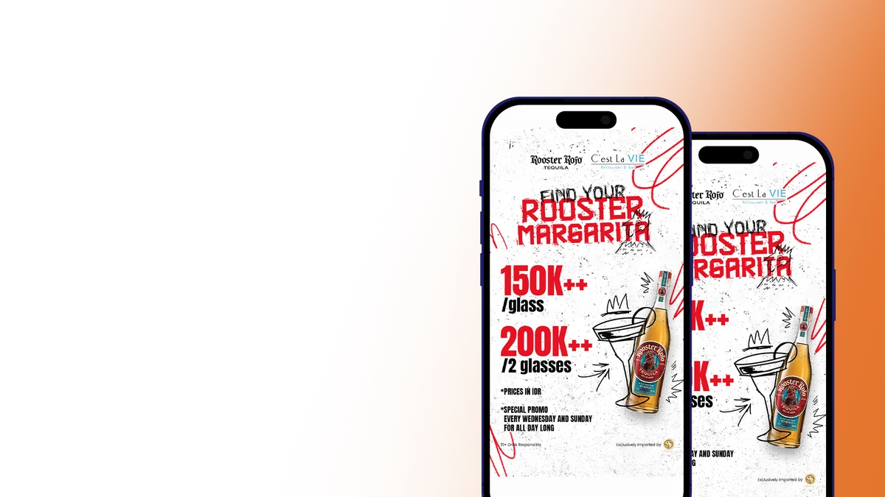
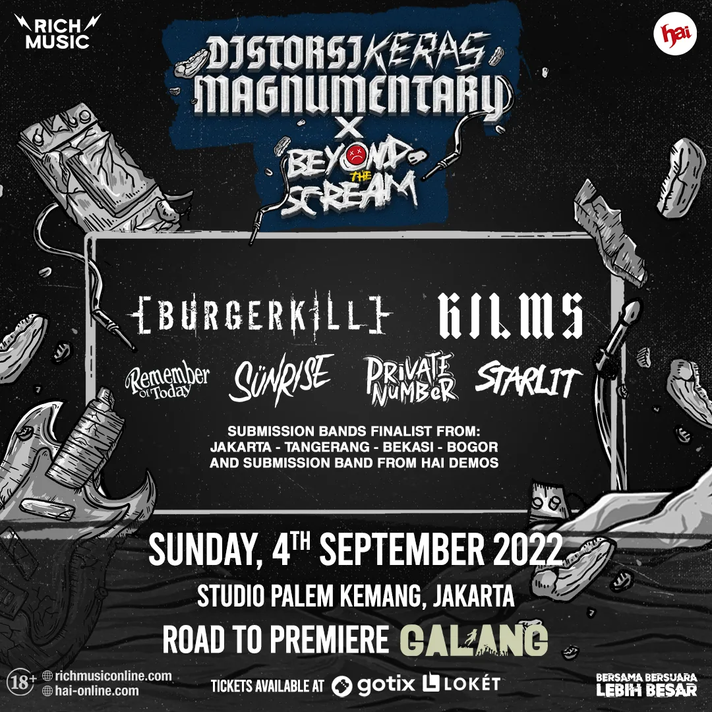
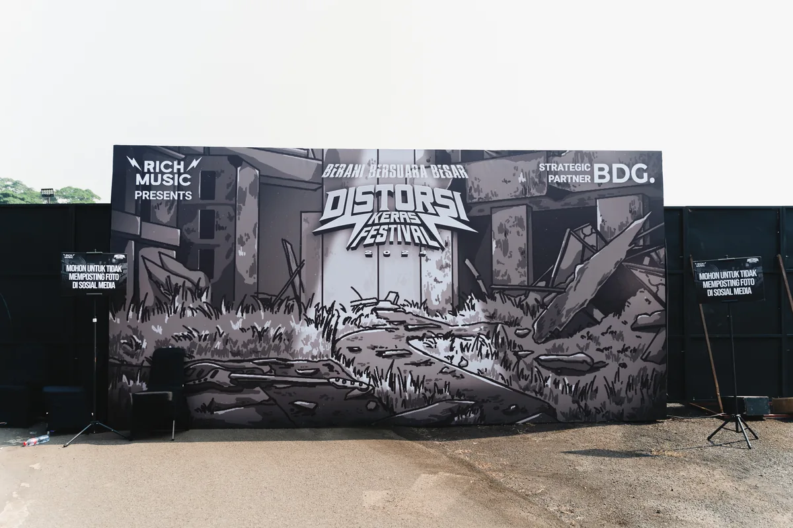

Annisa Raihan Djatmiko
Eca
About
CV
Work
Contact
01 Logofolio
02 Social Media & Print
03 Motion Graphics
04 Illustration
02
Social Media & Print
Social Media · Print
SUNTORY GLOBAL SPIRITS
Social Media & Print Design · Jim Beam, Roku Gin, Hibiki · 2024–2025
Social Media · Print

AMBER BEVERAGE GROUP
Social Media & Print Design · Rooster Rojo, KAH Tequila · 2025
Social Media · Print
FIREBALL & BUFFALO TRACE
Social Media · Print · POS Display · 2025–2026
Social Media · Event
MAKMUR BAHAGIA
Social Media · Event Poster Design · 2025–2026
Social Media · Print

RICH MUSIC ONLINE
Social Media · Event Flyers · Merchandise · 2022–2024
Event · Photography

DISTORSI KERAS
Event Design · Photography · 2024